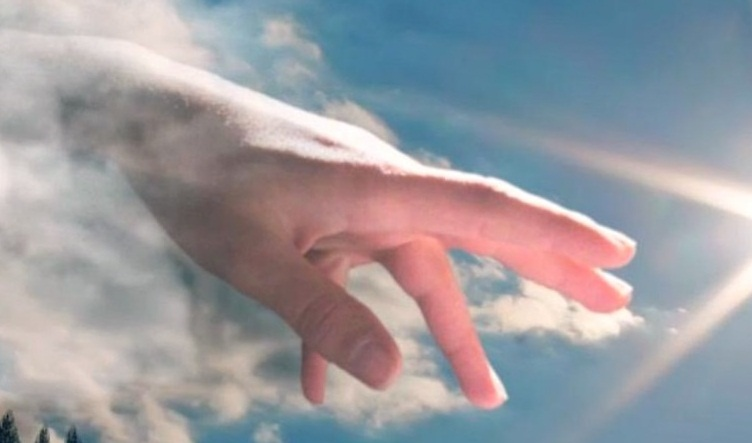

O que é Projeto Kairos?
É um projeto criado na cidade de Três Coroas(RS), por líderes de células da Comunidade Cristã do município.
Com o objetivo, carimbado por Deus, de fazer com que jovens se tornem pessoas de valor, segundo a vontade de Deus. Tentamos ensinar e aprender ao mesmo tempo sobre o sentido da vida.
Revelamos que todos nós temos dificuldades, mas também temos as mais lindas habilidades dadas por nosso senhor.
Usamos o esporte para chamar a atenção dos jovens, esportes que vão do futebol ao xadrez.
Através do dialogo queremos passar a eles lições de vida, também através de testemunhos e historias das mais diversas áreas. Explicamos que e sempre necessário acreditar que os sonhos são possíveis... Que bens materiais não são as coisas mais importantes da vida. E que sem jesus não chegamos a lugar nenhum. Queremos passar mensagens de fé e esperança ao coração de cada um.
Não buscamos lucro nesse projeto e sim resultados, resultados positivos na vida de cada jovem que participar. Com o esporte ensinamos, e aprendemos ao mesmo tempo, pois podemos compartilhar uns com os outros as mais puras sensações da vida. Ali participando o jovem tem a possibilidade de por em prática o que aprendeu, comprometendo-se a respeitar seu adversário em qualquer circunstância.
Veja
as
Curiosidades
Abaixo!!
